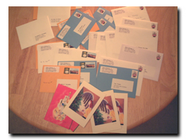

2004.12.25 Sat.
..+☆ 部屋の中 ☆+..
この写真は12月の初めに撮ったもの。思い立って折り紙でも作ってみました。
2004.12.25 Sat.
..+☆ クリスマスカード ☆+..
|  |
 |
|
|
|
毎年、アメリカとヨーロッパに住む人にはクリスマスカードを、日本に住む人
には年明けに挨拶状代わりのハガキを出していましたが、今年は全部クリスマ
スカードにしてみました。カードは妹夫婦が作ってくれました。届いてますか？
2004.12.6 Mon.
..+☆ スターバックスのクリスマスブレンド ☆+..
クリスマスの時期になるとスターバックスから「クリスマスブレンド」が発売
されます。普段はピートコーヒーを買うことが多いんだけど、この時期だけは、
スターバックスに乗り換えます。
2004.12.3 Fri.
..+☆ カステラ ☆+..
カステラを焼きました。カステラは冷凍保存できるので、写真のように6個くら
いずつ凍らせてます。容器に入れて冷蔵庫に入れておくと、欲しいときにいつ
でも食べられます。
|